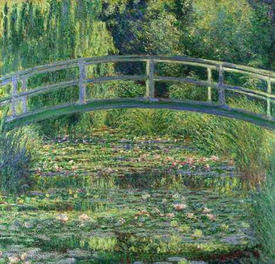

Por: Mharia Klara Padilha e Eduarda Ydaaj
Descubra técnicas, estilos e dicas para aprimorar a sua arte
A pintura é uma das formas de expressão artística mais antiga da humanidade. Por meio das cores, formas e texturas, artistas trasmitem emoções, ideias e histórias.
historia da pintura
A história da pintura é uma das jornadas mais fascinantes da humanidade, tendo início há cerca de 40 mil anos nas profundezas das cavernas pré-históricas, onde nossos ancestrais utilizavam carvão, terra colorida e sangue de animais para registrar rituais, animais e cenas de caça nas paredes de pedra. Com o passar dos milênios e o surgimento das primeiras civilizações, como no Antigo Egito e na Europa Clássica, a pintura transformou-se em uma poderosa ferramenta política, social e religiosa, evoluindo de figuras planas e altamente simbólicas para representações que buscavam imitar a realidade com precisão. Essa busca pela perfeição visual atingiu o seu auge durante o Renascimento, no século XV, quando mestres como Leonardo da Vinci e Michelangelo revolucionaram a arte ao inventar a perspectiva técnica — que trouxe o efeito de profundidade em três dimensões para as telas — e ao popularizar a tinta a óleo, que permitia misturar cores com suavidade e criar detalhes impressionantes de luz e sombra. No entanto, a grande reviravolta aconteceu no século XIX com a invenção da câmera fotográfica, um evento que libertou os pintores da obrigação de apenas registrar o mundo real e abriu as portas para a Arte Moderna; a partir desse momento, movimentos como o Impressionismo de Monet, o Cubismo de Picasso e o Abstracionismo passaram a valorizar a emoção, a luz, as formas geométricas e a pura expressão artística. Hoje, essa evolução continua viva e mais diversa do que nunca, expandindo-se para além dos museus através do grafite nas paredes das grandes metrópoles e da pintura digital nas telas de computadores e tablets, provando que a arte de pintar continua sendo uma das formas mais vitais e dinâmicas que o ser humano possui para contar suas histórias e emocionar o mundo.
Técnicas de Pintura
Aquarela
Utiliza tintas diluídas em águas, produzindo efeitos leves e transparentes. É muito usadas em paisagens e ilustrações.
Tinta a óleo
Caracteriza-se pelas riqueza de cores e pela secagem lenta, permitindo misturas suaves e detalhes refinados.
Acrílica
Possui secagem rápida e grande versabilidade e pode imitar os efeitos da aquarela ou da tinta a óleo.
Guache
Semelhante à aquarela, porém mais opaca e com cores intensas.
Estilos de Pintura
Impressionismo
Valoriza a luz e as cores, buscando registrar momentos

Realismo
Representa pessoas, objetos e paisagens com o máximo de fidelidade a realidade.

Surrealismo
Explora sonhos, imaginação e elementos fantástico.
.jpeg)
Dicas para iniciantes
1.Começe praticando formas simples.
2.Aprenda teoria das cores
3.Teste diferentes técnicas.
4.Observe obras de artistas famosos.
5.Pratique regularmente.
Curiosidades
*A pintura rupestre é uma das formas de arte mais antigas do mundo.
*As tintas a óleo se popularizaram durante o Renascimento.
*Existem milhares de tonalidades de cores utilizadas na arte moderna.


.jpeg) ❤️
❤️